The central research question: is there a relationship between country of origin, gender, and visual motif type across the Henry Gallery's Yugoslav costume & textile collection?
For our research, we were inspired by the collection of Eastern European textiles in the Henry Art Gallery, located on the University of Washington's campus in Seattle, Washington. Several of the costumes found in the Henry Art Gallery's exhibit were used for folk dancing and other traditional practices across Eastern Europe. Each piece found in this museum employs unique craftsmanship, from intricately woven pattern rugs to hand-stitched clothing and garments.
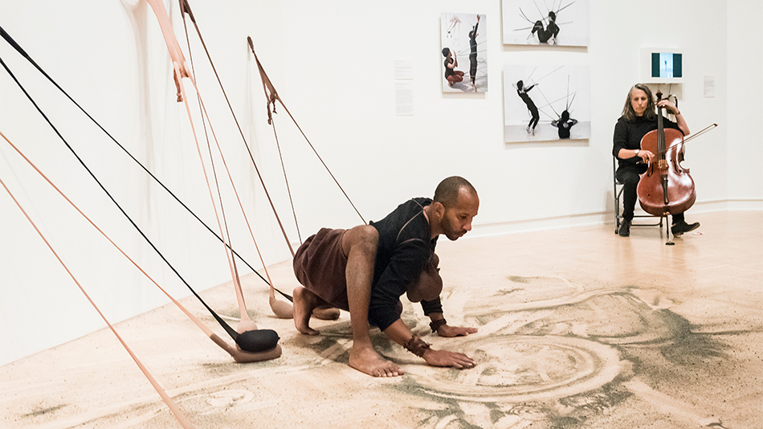
The Henry Art Gallery, University of Washington, Seattle: home of the Eastern European Art we analyze.
The textiles found in this exhibit, Carrying History, were originally curated by University of Washington professors, who had hoped to use them as study references for their students in the 1930s. Among these textiles were hundreds of different rugs, bags, costumes, and other articles of clothing, each reflecting the different cultural aspects of their countries of origin. As the collection began to grow, it evolved into the Costume and Textile Study Center at the University of Washington in the 1950s. This diverse assortment of textiles continued to be used for valuable research by students and other scholars until the University's Home Economics and Textile Study programs lost funding due to budget cuts. As a result, the curated fabrics and clothing were transferred to the Henry Art Gallery in 1982 to preserve their historical significance. The artifacts still hold great value today, both academically and monetarily, as the Art Gallery continued to grow the collection, combining it with a broader collection of contemporary art and materials. Throughout the decades, this collection has served as a key example of craftsmanship in textiles across a variety of countries.
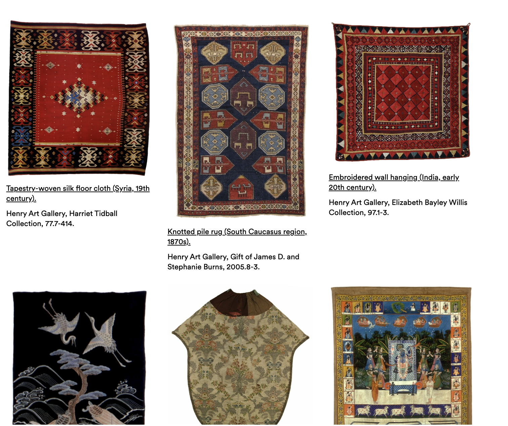
The Henry Art Gallery's Costume and Textiles
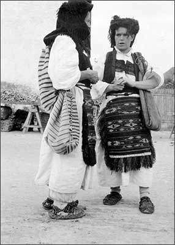
Regional costumes photographed by Payne, now held in the Henry Art Gallery permanent collection.
The collection of Eastern European Folk Costumes was primarily assembled by UW faculty member, Blanche Payne. Payne traveled alone through Yugoslavia in 1930 and again in 1936–37 to document and collect regional folk costumes. It was considered unusual at the time for a woman to travel alone, and Payne visited remote villages, markets, and festivals throughout the country. During her time there, she photographed people in their everyday lives and studied regional dress firsthand. Her research focused on the regions of Croatia, Macedonia, Bosnia, North Serbia, and Dalmatia, and she collaborated with both the Croatian National Museum in Zagreb and the Ethnographic Museum in Belgrade to expand the collection.
Payne collected during a particularly significant historical moment. Yugoslavia had only recently been unified. The Kingdom of Serbs, Croats and Slovenes was formed in 1918, and renamed the Kingdom of Yugoslavia in 1929 under King Alexander I's dictatorship. By the time of Payne's travels, regional folk dress was transitioning from everyday wear to a marker of national and cultural identity which we later hypothesized could have also influenced which regions had florals or geometrics.
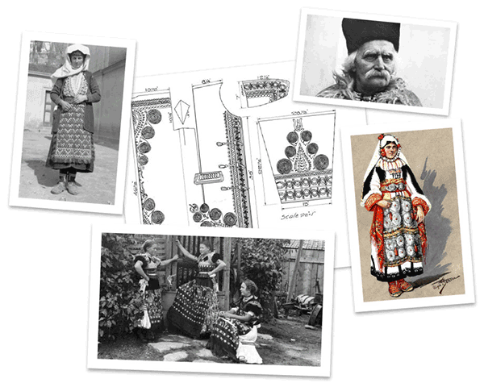
Blanche Payne documenting regional folk costume & drawing collection during her field research in Yugoslavia, 1930s.
As the Blanche Payne archive notes: “People identified mostly with their historic regions or lands until the nineteenth century, when the development of capitalism and integration processes caused the birth of modern national identities, so that Slovenes, Croats, Serbs, Bosnian Muslims, Macedonians, and Montenegrins each started to identify themselves as ethnic nations. Also at this time, there was a resurgence of interest in regional dress, which coincided with a romanticized and idealized idea of the peasant past, which culminated in the idea of ‘our dress,’ emblematic of national identity.”1 Payne was documenting these disappearing regional traditions at exactly the moment they were becoming politicized symbols. The collection was later complemented by Margaret Hord's donation of Eastern European costumes in 2003, strengthening and broadening the holdings at the Henry Art Gallery. 1 Blanche Payne Regional Costume Photograph and Drawing Collection, Archives West, Historical Background section.
We started out with a complete list of roughly 2000 data points in our Henry Art Gallery Eastern European data set. Since our dataset consisted of thousands of textiles and objects, it was logical to condense the data into a series that is much more manageable.
After careful consideration, our team decided that a large portion of our data included clothing and textiles from Yugoslavia. In fact, it appeared to be the focus of our dataset, so we decided to focus on Yugoslavia and remove the artifacts from all other regions. Two limitations with the given dataset is that some countries are more sampled than others and that there is a much larger pool of women's clothing than men's. We hypothesize a few reasons for this bias, one being that since Payne was a solo female researcher, she may have had easier access to photographing and collecting artifacts from women in villages. We also hypothesize it could be due to women's dress being more elaborate and varied. Payne's archive mentions women hand-made clothing for their families and their garments were more embellished, so perhaps there was more to document.
After identifying the country we would be focusing on, our data set still included an overwhelming amount of information for each artifact, with a wide range of varying media. In order to determine the relationships between our variables, we first considered narrowing our data set to a single medium (i.e. photography). Upon further analysis, we decided to adjust our parameters and explore other media options. One of the greatest issues with our data set was how the textiles included several different styles and attributes, making it difficult to categorize each artifact for our research. Articles of clothing were sewn differently, featured an array of different patterns, and created for different regions of Yugoslavia. The research questions for this data set were then readjusted to determine how gender influenced the patterns and characteristics of Yugoslavian textiles.
After the initial refining of our data, we began to examine the relationships between the individual artifacts. Since the dataset includes such a wide variety of artifacts, it was difficult to determine the relationships between certain textiles. For instance, each article of clothing included different styles of sewing techniques (each was recorded in the dataset), featured different patterns, and was crafted in different areas of Yugoslavia. Joseph, Tatev, Hawa, and Jewel worked together to separate the different variables and prepared them to be converted into visualizations.
The following examples illustrate how individual garments were categorized, and demonstrate the range of motif types found across the collection.
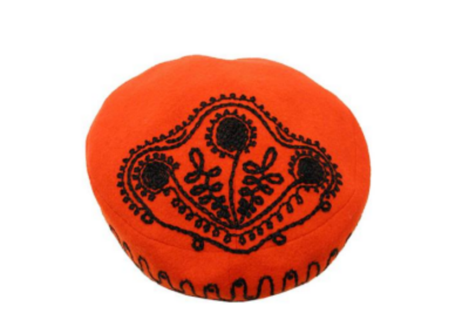
A Croatian men's hat that fits under the “both” category, since it contains both a geometric pattern and floral motifs.
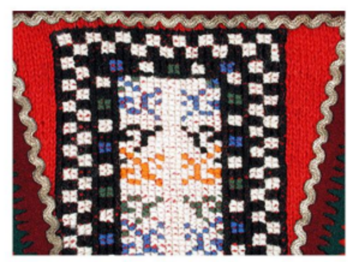
A closeup of a Croatian men's sock that fits into the geometric category due to its geometric pattern.
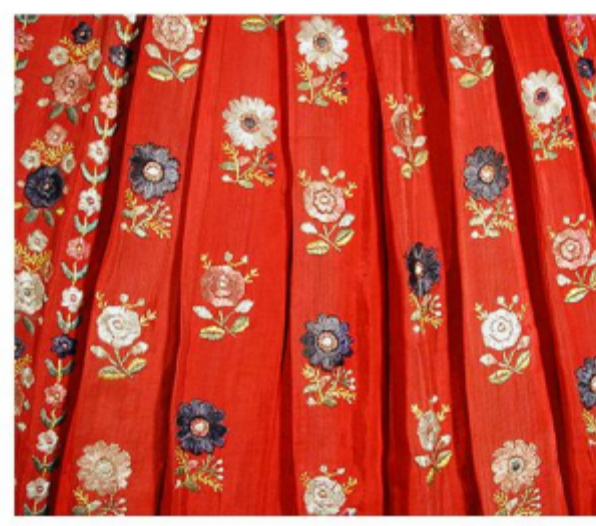
A Croatian women's apron that fits into the floral category due to its floral motifs.
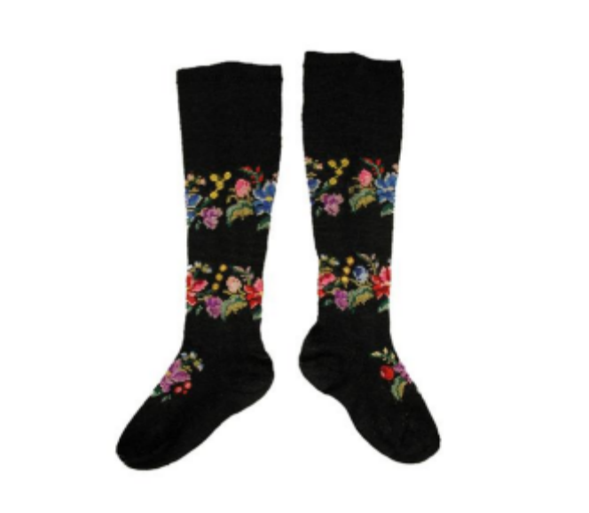
Serbian women's sock.
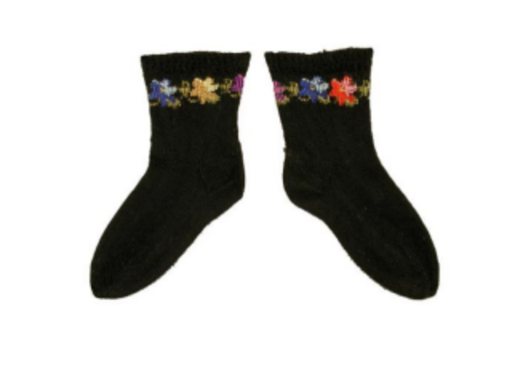
Serbian child's sock.
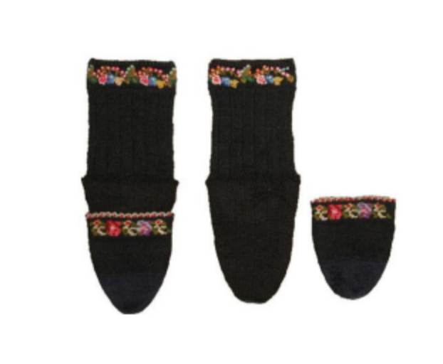
Serbian men's sock.
All three Serbian stockings above fit into the floral category. The men's examples are a key anomaly discussed in Thread 2 where their 100% floral rate inverts the gender hypothesis and reflects a curatorial story about what Blanche Payne chose to collect from Sumadija in Serbia.
In order to focus on the relevant given information about gender, pattern, and country of origin, we chose to remove many of the additional information on variables that were irrelevant to our research focus, such as materials used, the date made, and the size measurements. This cut our variable columns down to countries of origin, gender, and a variable called “subject/theme”, which contained information about patterns and motifs on the artworks. We decided to only look at artworks that had data present about each of those categories, which helped us narrow down our dataset to exactly 500 entries. Our team members Hawa and Jewel, with help from our TA Niko, categorized the “subject/theme” column by the key words it contained about motifs in each piece — either floral or geometric (within which we decided to include stripes), as well as “both” (containing both floral and geometric motifs) and “neither” (not containing floral or geometric motifs).
At this point, we were able to input our data into Tableau and begin creating visualizations. We struggled significantly in the beginning, but after meeting with Niko and our data librarian, Negeen, we were able to create multiple visualizations that were relevant and useful to our research. These visualizations included bar charts displaying the frequencies of each motif category separated by gender, another one displaying the ratios of floral to geometric patterns visualized on a map, and a ratio box display that has the ability to toggle between countries. Tatev was in charge of the Tableau process and created the visualizations that reflected our research. Hawa reviewed our entire process, documented by Joseph, and coded a website to display our research process and data findings, incorporating the Tableau visualizations that Tatev had created.
Note: the visualizations on this website draw on a broader version of our dataset that includes an “Object Type” column (kerchief, cap, shoe, etc.) which we did not rely on in our original Tableau analysis.
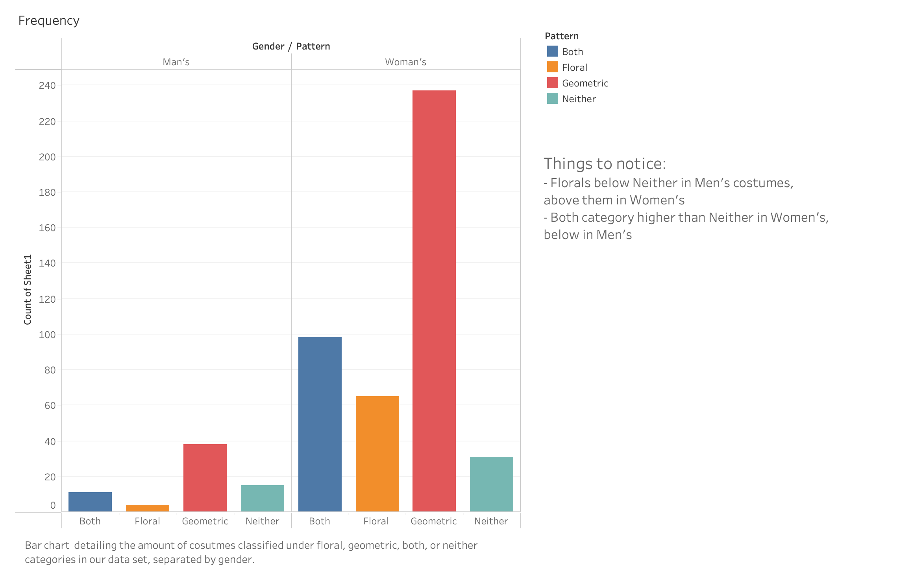
Bar chart detailing the number of costumes classified as floral, geometric, both, or neither, separated by gender.
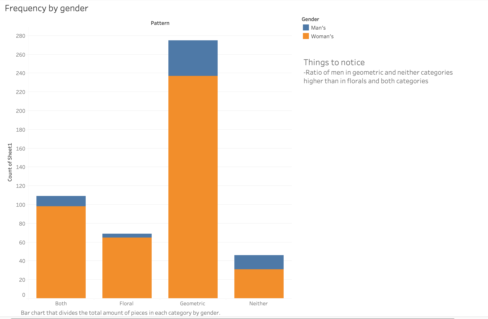
Stacked bar chart showing the ratio of men's and women's costumes within each pattern category. The ratio of men in geometric and neither categories is higher than in floral and both categories.
Use the arrows to cycle through each country view.
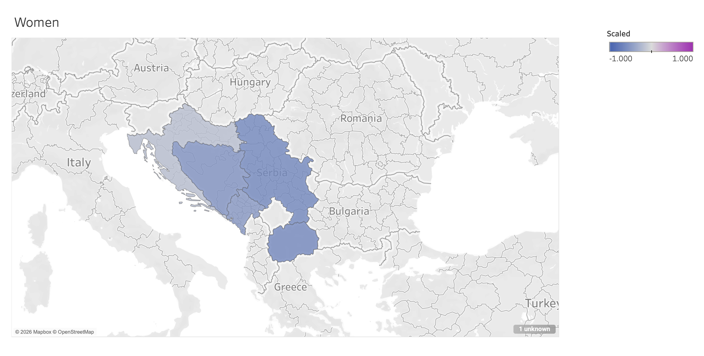
Floral motif distribution across women's garments by country.
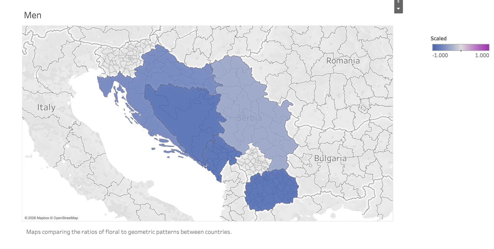
Floral motif distribution across men's garments. Note Serbia's unexpectedly high floral rate, driven by elaborately embroidered ceremonial stockings from Sumadija.
To try and overcome the frequency bias mentioned earlier regarding more women's clothing data than mens, when visualizing the data on a 2D map of Yugoslavia we instead looked at the proportion of floral to geometric patterns for each gender for a given country. This utilized an equation that leveraged the total number of clothes for that gender in a given country and then assigned a value that corresponds to either a greater percent of floral or geometric patterns. This worked by giving a country's score of -1 if all of that gender's garments were purely geometric, a score of 1 if all the clothes were floral, and 0 if it was a completely even split. An interesting pattern that we see is that every country had more geometric than floral patterns, however it was expected that the women had a higher proportion of florals in their garments. An outlier here is that men's Serbian clothes have more floral designs than women. All this being said, just because this equation assigned a proportion value relative to other countries as opposed to purely swinging the frequency of a count doesn't mean that the bias is eliminated. This means that outliers for countries with less data points can heavily skew the given value as opposed to a country with more data points.
Most countries show women's floral rates above men. Serbia is the notable exception: men's floral rate (44%) exceeds women's (25%). This is almost entirely driven by 12 elaborately embroidered men's stockings from Sumadija, all 100% floral — likely ceremonial pieces selected by Blanche Payne precisely because of their visual complexity. The 6:1 imbalance in sample sizes means percentages should be read carefully. This website's visualizations draw on a broader version of the dataset that includes the object type column, allowing comparisons beyond what was possible in Tableau.
In the end, we were unable to identify any strong conclusions from our data, and this study had inconclusive results. Approximately 13% of the data included men's clothing, which made it difficult to find relationships between genders and textile patterns. There was, however, a slight correlation between gender and motif in the Yugoslavian data set. Men's clothing often features geometric patterns while women's clothing tends to feature floral patterns.
Given the limitations of our initial findings, we became curious about whether patterns might emerge at a more granular level of analysis. We posed two additional threads of inquiry. The first examined whether floral and geometric motifs distribute differently across sub-regions within the same country, asking whether city or village-level variation might reveal cultural distinctions that country-level analysis obscures. The second asked whether garment type, rather than gender or country of origin, might be a stronger predictor of motif: specifically, whether certain types of clothing consistently carry floral motifs while others tend toward geometric. These threads were not designed to replace our original hypothesis, but to extend it: if gender alone does not explain the pattern, perhaps the answers lie in where a garment was made, or what kind of garment it is.
It is important to note that while this collection provides an authentic look into the region, it cannot be treated as an exhaustive view of all Eastern European clothing. The findings from this study cannot be generalized based off of the textiles featured in the Henry Art Gallery's exhibit. Because the data set featured articles of clothing and textiles hand-selected by University of Washington professors, there may have been selection bias involved in the process. Therefore, it would be unrealistic to assume this data set represents patterns found all across Yugoslavia. After reviewing the data and conclusions, it would be greatly beneficial to see if there are stronger connections between motifs and different categories of textiles in a future study.